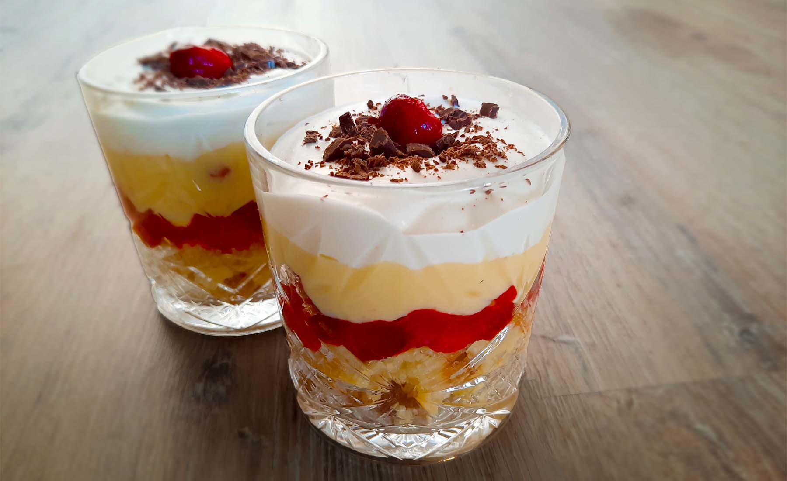

engelse trifle
Dit gerecht is bekend vanwege de vele laagjes. Je kan eindeloos variëren met de ingrediënten. Gebruik bijvoorbeeld eens bastognekoekjes in plaats van cake!

Bereidingsduur: 25 minuten
Aantal personen: 2
Ingrediënten:
1,5 plakje roombotercake
2,5 eetlepels amaretto
1 eetlepel honing
150 gram cranberries
70 milliliter slagroom
10 eetlepels vanillevla
1 reep chocola
enkele frambozen
1 eetlepel gembersiroop
1,5 plakje roombotercake
2,5 eetlepels amaretto
1 eetlepel honing
150 gram cranberries
70 milliliter slagroom
10 eetlepels vanillevla
1 reep chocola
enkele frambozen
1 eetlepel gembersiroop
Instructies:
1. Wanneer je fruit uit de diepvries gebruikt, haal deze er eerst uit en bak deze in een pan. Snijd het plakje cake in blokjes en drenk deze in 2 eetlepels amaretto. Verdeel deze blokjes over 2 glazen.
2. Klop de slagroom stijf met ½ eetlepel likeur en ½ eetlepel honing.
3. Prak de cranberries en mix met 1 eetlepel gembersiroop en 0,5 eetlepel honing. Verdeel een groot deel hiervan in een laagje over beide glazen. Verdeel 3 eetlepels vla over ieder glas. Maak dan nog een laagje met cranberry en een laagje met vla en verdeel dan de slagroom erover.
4. Snipper een gewenste hoeveelheid chocola en verdeel over de glazen. Garneer met enkele frambozen.
1. Wanneer je fruit uit de diepvries gebruikt, haal deze er eerst uit en bak deze in een pan. Snijd het plakje cake in blokjes en drenk deze in 2 eetlepels amaretto. Verdeel deze blokjes over 2 glazen.
2. Klop de slagroom stijf met ½ eetlepel likeur en ½ eetlepel honing.
3. Prak de cranberries en mix met 1 eetlepel gembersiroop en 0,5 eetlepel honing. Verdeel een groot deel hiervan in een laagje over beide glazen. Verdeel 3 eetlepels vla over ieder glas. Maak dan nog een laagje met cranberry en een laagje met vla en verdeel dan de slagroom erover.
4. Snipper een gewenste hoeveelheid chocola en verdeel over de glazen. Garneer met enkele frambozen.